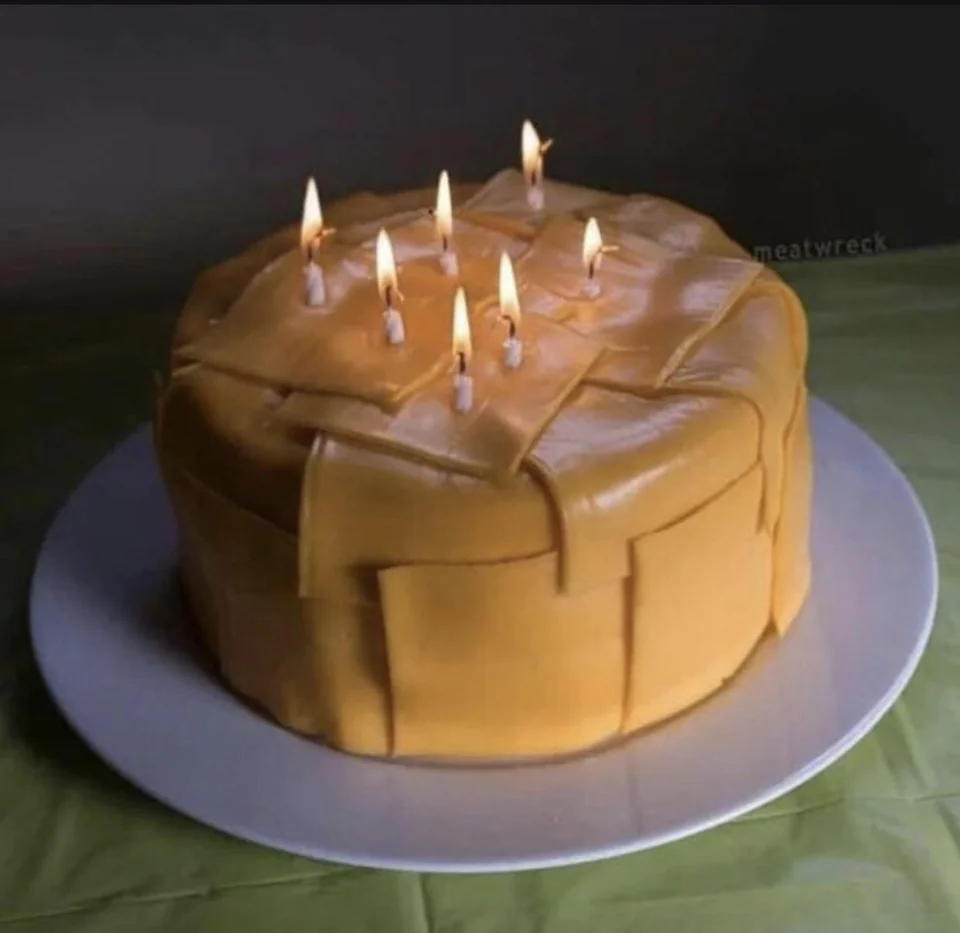

Cheesecake

This is our best recipe for cheesecake with a rich, creamy texture and cherry topping for a showstopping dessert
that is also easy to make!
Ingredients
- 1 Costco cake (any kind)
- 200 slices of American cheese (any brand)
- 20 years exposure to Dadaist art
Steps
- Buy cak
- Slap all american cheeses into cake
- Go back to grocery to buy the candles
- Happy 7th birthday, Jan Michael!
Back